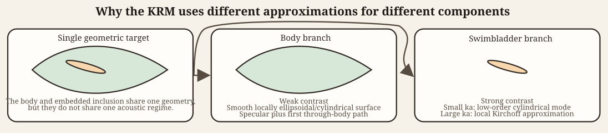
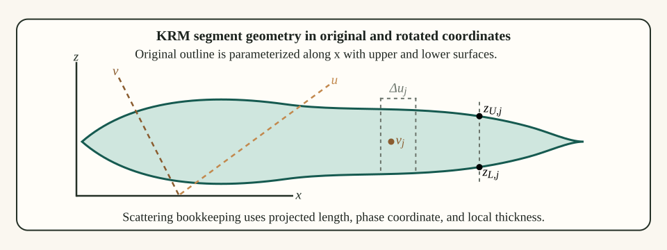

Introduction
Benchmarked Validated
Model-family pages: Overview Implementation Theory
The Kirchhoff-Ray Mode (KRM) model is a composite scattering theory for elongated fish-like bodies. Its defining assumption is that different anatomical components can occupy different acoustic regimes. The fish body is treated with a Kirchhoff-ray approximation appropriate for a weakly contrasting, smoothly varying, elongated fluid-like body, while the swimbladder is treated either by a low-order modal approximation when its acoustic size is small or by a Kirchhoff approximation when it is larger (C. S. Clay 1991; Clarence S. Clay 1992; Clarence S. Clay and Horne 1994).
Its body term therefore uses weak fluid-like tissue contrasts at a fluid interface, while its swimbladder term uses a much stronger gas-tissue contrast that can support either a low-order modal response or a higher-frequency Kirchhoff response. The same target is intentionally split across approximation regimes because the dominant scattering mechanisms of tissue and gas are not the same.
The name of the model follows directly from that hybrid structure: Kirchhoff for the geometric body treatment, ray for the body traversal terms, and mode for the low-frequency cylindrical (or elliptic cylindrical) contribution retained for the swimbladder. The point of the model is not that one approximation is universally best, but that a fish-like target naturally mixes a weakly scattering body with a much stronger internal inclusion. The KRM is designed to keep those two physical roles distinct rather than forcing the entire target into a single approximation regime.
Throughout this page, seawater is medium 1, the body
tissue is medium 2, and a strongly contrasting internal
inclusion such as a gas-filled swimbladder is medium 3.

The model is built from two different physical pieces. The body is represented as a chain of short locally cylindrical Kirchhoff segments, whereas the internal inclusion is the component assigned either a low-order modal treatment or a higher-frequency local Kirchhoff term.
Although the swimbladder is the canonical internal scatterer in fisheries applications, the KRM formulation does not require a gas-filled inclusion. The internal term more generally represents any region of strong acoustic contrast embedded within a weakly scattering body. In the absence of such a feature, the model reduces naturally to the body-only Kirchhoff-ray formulation.
Physical basis of the KRM
Kirchhoff approximation for a smooth body
The starting point for the KRM body contribution is the Kirchhoff approximation for scattering from a smooth convex surface. In that approximation, each small patch of the illuminated surface is replaced by its tangent plane, and the local scattered field is taken to be the field that would be produced by an infinite plane with the same local material boundary. This is a high-frequency approximation: the local radius of curvature must be large compared with the wavelength, and the surface must be smoothly varying over a scale of several wavelengths.
For a locally cylindrical fish body this means that a short segment can be treated as a small fluid cylinder whose scattering is dominated by specular reflection and a transmitted path through the body. The scattered field from the full body is then built by coherently summing the contributions of many such short segments.
In Kirchhoff form, the scattered pressure amplitude may be written schematically as a surface integral over the insonified body:
\mathcal{f}_\text{bs} \propto \int_S \left[p\frac{\partial G}{\partial n} - G\frac{\partial p}{\partial n}\right] dS,
where G is the exterior Green’s function and n is the outward normal. The Kirchhoff approximation replaces p and \partial p/\partial n on each local patch by the corresponding tangent-plane values. For a smooth specular patch, stationary phase then reduces this surface integral to a local contribution proportional to the square root of acoustic size.
For a short cylindrical segment this produces a local amplitude of the form:
d f_{K} \sim -i\frac{(k a)^{1/2}}{2\sqrt{\pi}} e^{-i2k v_U}\,\Delta u,
where \Delta u is projected segment length, a is local radius, k is the water wavenumber, \theta is the angle of incidence, and v_U is the rotated upper-surface phase coordinate of the segment. The KRM body contribution starts from this leading Kirchhoff term and then augments it by the first transmitted traversal through the body.
Why a hybrid body-swimbladder model is needed
The body of a fish is often only weakly contrasting relative to water, so a high-frequency surface-based approximation is reasonable when the body is not too small acoustically. The swimbladder is different. Because it is gas-filled, its contrast with the surrounding tissue is large, and when its acoustic size is small the lowest cylindrical response dominates the backscatter. A single asymptotic description is therefore not adequate across all components. The KRM is constructed specifically to combine these regimes in one coherent sum.
That distinction is the main conceptual reason the KRM exists. If one forced the whole animal into a weak-contrast body approximation, the dominant bladder contribution would be misrepresented. If one forced the whole animal into a gas-cylinder-style modal approximation, the body would be over-idealized in a different way. The hybrid formulation keeps the body and internal inclusion in the regimes that matter most physically.
Segmented geometric description
Rotated coordinates
Let the body axis be described by axial coordinate x and dorsoventral coordinate z, with incident angle \theta. The geometry is transformed into rotated coordinates aligned with the incident wave through:
u(j) = x(j)\sin\theta - z(j)\cos\theta,
and:
v(j) = x(j)\cos\theta + z(j)\sin\theta.
The quantity u(j) measures projected location across the insonified length, while v(j) determines phase accumulation along the incident direction. This change of variables is not just a geometric convenience. It is the step that allows the segmented body to be written as a coherent sum of short contributions with the correct projected lengths and phases for the chosen angle of incidence.

Scattering is accumulated in the rotated (u,v) frame aligned with the insonifying wave even though the body description begins in (x,z). The quantities v_{U,j} and v_{L,j} denote the rotated upper and lower surface phase coordinates used in the two-path body term, while \Delta u_j is the projected segment length that weights each local contribution.
Segment lengths and radii
For adjacent points j and j+1, the projected segment length is written as:
\Delta u_j = [x(j+1)-x(j)]\sin\theta,
which follows the original KRM formulation. This expression is a slender-body approximation to the exact relation \Delta u_j = u(j + 1) - u(j) in which the contribution from the cross-sectional variation, \left[ z(j + 1) - z(j) \right] \cos \theta, is neglected. The approximation assumes that the body is smoothly varying and primarily parameterized along its axis, so that changes in z over a short segment are small compared with changes in x. Under this assumption, the projected length is controlled by the axial extent of the segment, consistent with the one-dimensional segmentation used in the KRM body formulation. The effective radius of the short locally cylindrical segment is:
a_j = \frac{w(j)+w(j+1)}{4},
where w is local width. These definitions are the geometric ingredients needed to assign a local scattering contribution to each short segment. They also show why segmentation quality matters. If the body outline changes too abruptly from point to point, the locally cylindrical and smoothly varying assumptions become harder to defend.
Body scattering contribution
Interface coefficients
Treat the body as a fluid-like medium embedded in water. Let the reflection coefficient at the water-body interface be \mathcal{R}_{wb}. The transmitted ray that crosses the body and exits again carries the two-way transmission factor:
\mathcal{T}_{wb}\mathcal{T}_{bw} = 1-\mathcal{R}_{wb}^2.
This identity holds under lossless, locally planar, and near-normal incidence assumptions used in the KRM approximation.
For normal incidence on a fluid-fluid interface, the reflection coefficient is determined by impedance contrast:
\mathcal{R}_{wb} = \frac{Z_B-Z_w}{Z_B+Z_w}, \qquad Z_w = \rho_w c_w, \qquad Z_B = \rho_B c_B.
The corresponding transmission coefficients satisfy:
\mathcal{T}_{wb} = 1+\mathcal{R}_{wb}, \qquad \mathcal{T}_{bw} = 1-\mathcal{R}_{wb},
These transmission formulas imply the two-way traversal identity:
\mathcal{T}_{wb}\mathcal{T}_{bw} = 1-\mathcal{R}_{wb}^2.
Kirchhoff reduction of a short segment
For a short locally cylindrical segment, the Kirchhoff approximation implies that the scattering amplitude is obtained by integrating the local specular contribution over the projected illuminated area. Stationary-phase reduction of that surface integral gives an amplitude proportional to the square root of the local acoustic size and to the projected segment length. That is the origin of the factor:
\frac{(k a_j)^{1/2}}{2\sqrt{\pi}}\Delta u_j.
Thus the square-root dependence is not arbitrary. It is the standard stationary-phase scaling of a specular high-frequency contribution from a smooth curved segment.
Near-surface and through-body rays
Each short body segment contributes two principal coherent terms. The first is a direct reflection from the dorsal surface. The second enters the body, propagates through it, reflects internally, and exits again. Retaining the standard KRM notation, the rotated upper and lower surface phase coordinates are denoted by v_{U,j} and v_{L,j}. The two contributions are:
\mathcal{R}_{wb} e^{-i2k v_{U,j}},
The transmitted-return contribution is:
\mathcal{T}_{wb}\mathcal{T}_{bw} e^{-i2k v_{U,j} + i2k_B(v_{U,j}-v_{L,j}) + i\psi_{B,j}},
Here k is the wavenumber in water and k_B is the wavenumber in the body medium. The first phase term locates the segment in the external field, while the second term includes the additional propagation through the body thickness expressed in rotated coordinates.
The KRM body term is therefore a two-path approximation derived from Kirchhoff geometry. The local segment behaves like a short fluid slab: one contribution reflects from the first interface, while the other accumulates additional phase by traversing the body and returning. Higher-order internal traversals are neglected, which is one reason the model remains compact.
In the compact KRM notation, the internal traversal phase is written as:
2k_B(v_{U,j}-v_{L,j}),
so the coherent local bracket becomes:
\left[ \mathcal{R}_{wb} e^{-i2k v_{U,j}} - \mathcal{T}_{wb}\mathcal{T}_{bw} e^{-i2k v_{U,j}+i2k_B(v_{U,j}-v_{L,j})+i\psi_{B,j}} \right].
The relative sign arises from phase conventions in the transmission and internal reflection process and is retained here to match the standard KRM formulation.
This is the explicit bridge from Kirchhoff surface scattering to the KRM body formula: start from the leading specular contribution, retain the first through-body transmitted return, and neglect higher multiple internal traversals. The KRM body expression is the coherent sum of two local paths: a near-surface reflected contribution and a first transmitted traversal through the body thickness, both multiplied by the same Kirchhoff scaling for the segment.
Segment amplitude scaling
The body segment is treated as a short locally cylindrical reflector. Kirchhoff asymptotics therefore gives amplitude factor proportional to the square root of local acoustic size:
\frac{(k a_j)^{1/2}}{2\sqrt{\pi}},
Multiplying by the projected segment length \Delta u_j gives the segment scattering length:
\mathcal{L}_{B,j} \approx -i\frac{\mathcal{R}_{wb}}{2\sqrt{\pi}} (k a_j)^{1/2} \Delta u_j \left[ e^{-i2k v_{U,j}} - \mathcal{T}_{wb}\mathcal{T}_{bw} e^{-i2k v_{U,j}+i2k_B(v_{U,j}-v_{L,j})+i\psi_{B,j}} \right].
Body phase correction
An empirical phase correction is introduced to improve agreement with finite-wavelength behavior across intermediate acoustic sizes:
\psi_{B,j} = -\frac{\pi k_B z_{U,j}}{2(k_B z_{U,j} + 0.4)},
where z_{U,j} is the segment-averaged upper-surface coordinate used in the body bookkeeping. As with other hybrid fisheries-acoustics formulas, this term compensates for the fact that a strict geometric traversal phase alone does not adequately describe the finite-wavelength body contribution over the full practical range.
Swimbladder contribution
Low-frequency modal approximation
In the classical KRM description, when the swimbladder acoustic size is small, the scattering is dominated by the azimuthally symmetric (m = 0) mode. The swimbladder scattering length is then approximated by:
L_M(ka)\big|_{m=0} = e^{i(\chi-\pi/4)}\frac{L_e}{\pi}\frac{\sin\Delta}{\Delta}b_0,
where L_e is an effective length, \Delta is the same finite-length phase parameter used in short-cylinder scattering, and:
b_0 = -\frac{1}{1+iC_0}.
The coefficient b_0 is the zeroth-order cylindrical scattering coefficient obtained by imposing boundary conditions on a gas-filled cylinder in the long-wavelength limit. Thus the modal component of the KRM is literally the retention of the breathing-mode contribution and the neglect of higher cylindrical modes.
This point is essential to the logic of the KRM. The modal term is not merely another empirical correction. It comes from the low-frequency partial-wave description of a gas-filled cylinder, for which the azimuthally symmetric mode dominates as ka \to 0.
For the low-frequency swimbladder term, the relevant local scattering problem is not gas in water. It is gas inside body tissue. Accordingly, let the surrounding body medium be region 2 and the internal gas be region 3. The modal derivation then begins with the cylindrical expansions:
p_{2,inc}(r,\phi) = \sum_{m=0}^{\infty} \epsilon_m i^m J_m(k_2 r)\cos(m\phi), \qquad p_{2,scat}(r,\phi) = \sum_{m=0}^{\infty} \epsilon_m i^m b_m H_m^{(1)}(k_2 r)\cos(m\phi), \qquad p_{3}(r,\phi) = \sum_{m=0}^{\infty} \epsilon_m i^m c_m J_m(k_3 r)\cos(m\phi).
Pressure continuity and normal-velocity continuity at the gas boundary r=a give, for each mode m:
J_m(k_2 a) + b_m H_m^{(1)}(k_2 a) = c_m J_m(k_3 a), \qquad \frac{1}{\rho_2}\left[J_m'(k_2 a)+b_mH_m^{(1)\prime}(k_2 a)\right] = \frac{1}{\rho_3}\frac{k_3}{k_2}c_mJ_m'(k_3 a).
Eliminating c_m gives the usual fluid-cylinder coefficient. In the long-wavelength limit, the m=0 term dominates, so one retains only:
b_0 = -\frac{1}{1+iC_0}
The auxiliary coefficient entering the low-frequency modal term is:
C_0 = \frac{ \dfrac{J_0'(k_3 a)}{J_0(k_3 a)}Y_0(k_2 a) - g_{32}h_{32}\,Y_0'(k_2 a) }{ \dfrac{J_0'(k_3 a)}{J_0(k_3 a)}J_0(k_2 a) - g_{32}h_{32}\,J_0'(k_2 a) }
where g_{32}=\rho_3/\rho_2 and h_{32}=c_3/c_2 for the gas-filled cylinder embedded in body tissue. The low-frequency KRM bladder term therefore inherits its coefficient directly from the same pressure-continuity and normal-velocity conditions used in cylindrical modal theory. The additional KRM simplification is only the truncation to the azimuthally symmetric mode when ka \ll 1.
This b_0 coefficient is the modal ingredient used in the low-frequency KRM swimbladder contribution.
High-frequency Kirchhoff approximation for the swimbladder
When the swimbladder is no longer acoustically small, the same local-Kirchhoff logic used for the body is applied to the swimbladder. The segment contribution becomes:
\mathcal{L}_{SB,j} \approx -i\frac{\mathcal{R}_{bc}\mathcal{T}_{wb}\mathcal{T}_{bw}}{2\sqrt{\pi}} A_{SB,j}[(k a_j+1)\sin\theta]^{1/2} \Delta u_j e^{-i(2k_Bv_j+\psi_{p,j})}
where \mathcal{R}_{bc} is the body-to-bladder reflection coefficient and v_j is the rotated phase coordinate of segment j.
Thus the KRM assigns the swimbladder to one of two regimes. In the long-wavelength regime it is treated by the leading cylindrical mode. In the larger-size regime it is treated as a chain of locally specular segments. The model is hybrid because it explicitly switches the physical description according to which asymptotic regime is more appropriate.
This is also the point at which readers should be careful about interpretation. The regime switch is not claiming that the swimbladder ceases to have modal structure above a particular threshold in any exact mathematical sense. It is a modeling choice that says one asymptotic description becomes more useful than the other as acoustic size increases.
Swimbladder amplitude and phase corrections
The empirical amplitude correction is:
A_{SB,j} = \frac{k a_j}{k a_j+0.083}
and the phase correction is:
\psi_{p,j} = \frac{k a_j}{40+k a_j}-1.05
As in the body term, these corrections account for the finite-wavelength transition between strict long-wavelength modal behavior and the regime in which a Kirchhoff treatment becomes reasonable.
Total scattering amplitude
The total scattering length is the coherent sum of body and swimbladder terms:
\mathcal{f}_\text{bs} = f_{body}+f_{bladder}
The backscattering cross-section is therefore:
\sigma_\text{bs} = |\mathcal{f}_\text{bs}|^2
and the target strength is:
TS = 20\log_{10}|\mathcal{f}_\text{bs}|.
The logarithmic definition uses 20\log_{10} because \mathcal{f}_\text{bs} is a scattering length rather than a cross-section.
Mathematical assumptions
The KRM depends on several structural assumptions:
- The target can be represented as chains of short locally cylindrical segments.
- The body is fluid-like rather than elastically resonant.
- The body contribution is dominated by specular and through-body ray terms.
- The swimbladder is either in a low-order modal regime or a local Kirchhoff regime.
- Multiple scattering between distant segments is neglected.
- The Kirchhoff approximation is valid locally, implying smoothly varying geometry and sufficiently large local acoustic size.
Under these assumptions the KRM captures the leading scattering mechanisms of fish-like bodies with gas-filled inclusions, but it is not intended to model fine elastic resonances, anatomically complex multiple-scattering phenomena, or detailed three-dimensional end effects that fall outside the segmented locally cylindrical description.